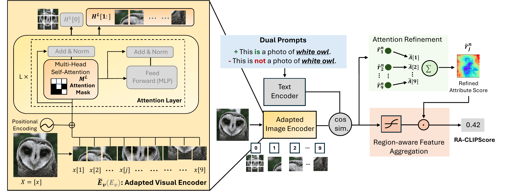
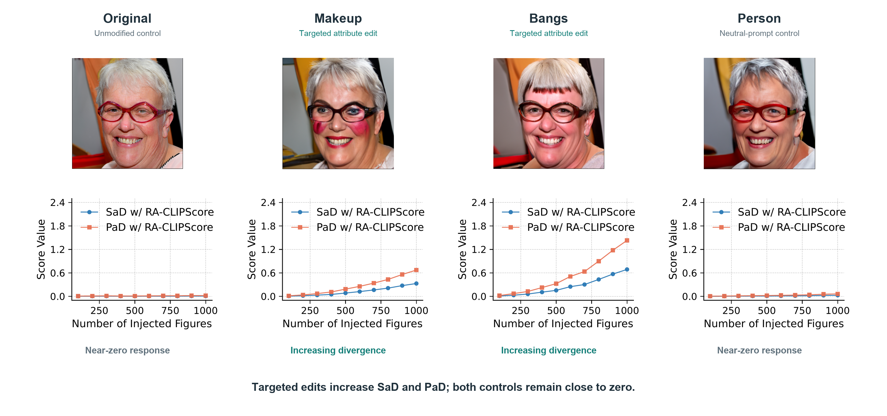
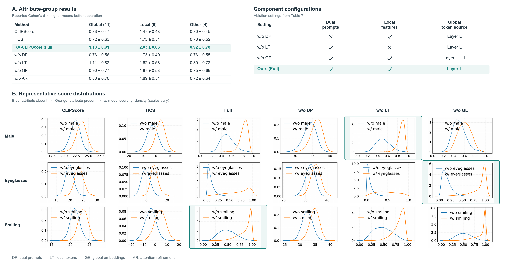
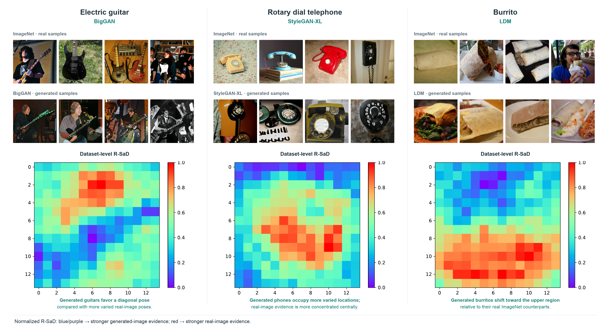

RA-ClipScore Making Generative Model Evaluation More Interpretable
NeurIPS 2026
*Most of the work was performed while Taras Kucherenko was at Electronic Arts (EA).
Abstract
Generative models can produce images nearly indistinguishable from real data, yet rigorous and interpretable evaluation remains challenging. Conventional metrics such as FID provide only scalar scores with limited diagnostic insight. Widely adopted CLIP-based metrics enable semantic evaluation beyond simple training class labels, but inherit limitations from CLIP’s training paradigm that restrict attribute-wise analysis. We propose RA-CLIPScore, a novel metric that mitigates these issues and extends CLIP-based evaluation to spatial distribution alignment, measuring whether generated objects adhere to the positional priors found in the training data. RA-CLIPScore introduces dual prompts to decouple competing attributes and leverages local patch tokens to capture fine-grained regional semantics. We evaluate image generative models on their ability to match both attribute and spatial distributions of the training data. Extensive experiments show that RA-CLIPScore provides more robust and interpretable evaluations than prior methods, particularly under distribution misalignment or partially irrelevant textual attributes. We further demonstrate how it reveals spatial biases in generative models. User evaluations confirm that Regional Single Attribute Divergence based on our RA-CLIPScore aligns more closely with human perception of visual diversity than existing semantic metrics.
Methodology

Our proposed RA-CLIPScore. We introduce dual prompts and regional feature extraction to improve interpretability of CLIP-based evaluation metrics while extending to spatial domain. Dual prompts decouple correlations among attributes, whereas regional feature extraction enhances fine-grained sensitivity through an adapted visual encoder, attention refinement, and region-aware feature aggregation. Grey blocks (left) denote components unchanged from the original visual encoder.
Injection Experiment
Do the metrics respond to targeted attribute shifts?

We evaluate whether RA-CLIPScore-based Single-attribute Divergence (SaD) and Pair-attribute Divergence (PaD) capture controlled attribute shifts by progressively injecting images into FFHQ. DiffuseIT generates targeted edits using the prompts “makeup” and “bangs”, while unmodified images and neutral “person” edits serve as controls. As the number of injected images increases, both SaD and PaD rise monotonically for the targeted edits, with a stronger response to bangs, while remaining close to zero for both controls. These results demonstrate sensitivity to attribute-distribution shifts while maintaining low responses under the tested control conditions.
Ablation Study
What is the contribution of each component?

We evaluate the contribution of each RA-CLIPScore component by individually removing dual prompts (DP), local tokens (LT), global embeddings (GE), or attention refinement (AR), with CLIPScore and HCS as baselines. We estimate score distributions for attribute-present and attribute-absent images using Gaussian kernel density estimation and measure their separation with Cohen’s d, where higher values indicate better discrimination. Across 20 CelebA attributes, the full model achieves the highest mean separation in all three groups: global (1.13), local (2.03), and other (0.92). Removing any component reduces these group-level means, although the best configuration varies by individual attribute: w/o LT performs best for Male, w/o GE for Eyeglasses, and the full model for Smiling. These results highlight attribute-dependent contributions of individual components while supporting the complete framework for evaluation across diverse attributes.
Spatial Analysis
Can R-SaD reveal spatial biases in generated images relative to real data?

We evaluate spatial distribution alignment by comparing class-conditional samples from BigGAN, StyleGAN-XL, and LDM with the corresponding ImageNet subsets at 256 × 256 resolution. Using ImageNet class names as textual attributes, we compute R-SaD as the difference between real and generated mean regional attribute scores at each patch and visualize the maps on a normalized 0–1 scale. The results reveal distinct spatial tendencies: BigGAN favors approximately 45° diagonal orientations for electric guitars; StyleGAN-XL places rotary dial telephones more variably than the predominantly centered real examples; and LDM shifts burritos toward the upper image region. These examples illustrate how R-SaD localizes dataset-level spatial discrepancies beyond a single global evaluation score.
Video Presentation
Poster
BibTeX
@inproceedings{lu2026raclipscoremakinggenerativemodel,
title={RA-ClipScore: Making Generative Model Evaluation More Interpretable},
author={Yifan Lu and Taras Kucherenko and Hedvig Kjellström and Judith Bütepage},
year={2026},
booktitle={Neural Information Processing Systems},
url={https://arxiv.org/abs/2608.12088},
}